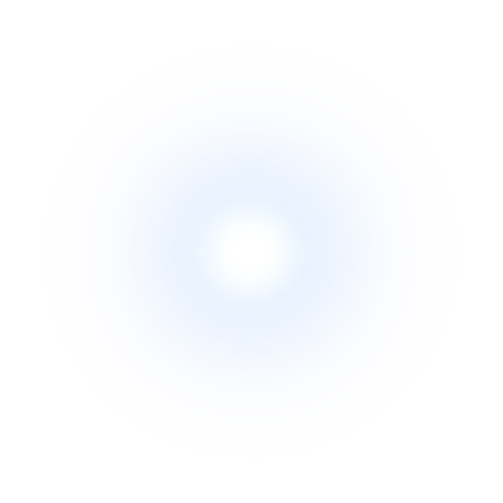
Создаём сияние здоровой улыбки
Под светом достижений медицинской науки
Сочи, Виноградная, 55/1, 2‑й этаж
ПозвонитьНовая стоматологическая клиника · Сочи, Виноградная, 55/1
Стоматология, в которой на вас есть время
«Академия улыбки» открылась в 2026 году. Два кабинета, врач с одиннадцатилетней практикой и час на первый приём: осмотр, план лечения и ответы на вопросы — без спешки и лишних процедур.
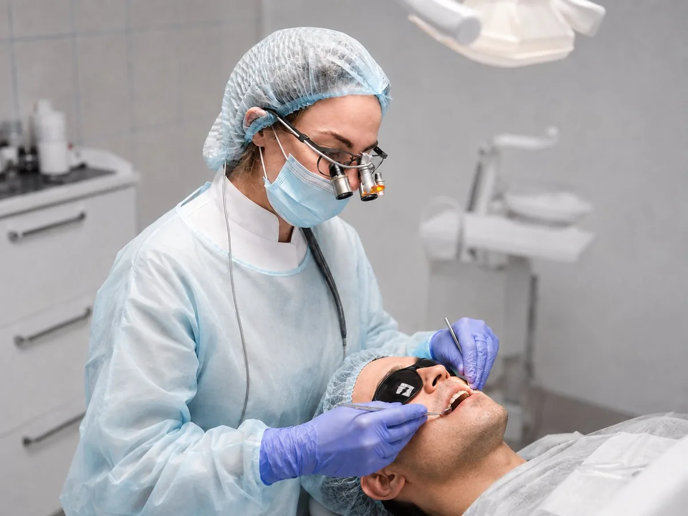
Что мы делаем
Шесть направлений — комплекс в одном месте
Диагностика, лечение, хирургия и протезирование — в одной клинике и у одного врача: не нужно ходить по специалистам и пересобирать план лечения в каждом новом кабинете.
Гигиена и профилактикаЧистка ультразвуком и Air Flow, полировка щёткой и пастой. Рекомендуем раз в три месяца.
- Комплексная гигиена, обе челюсти
- Ультразвук и Air Flow
- Полировка щёткой и пастой
Лечение зубов и каналовКариес, пульпит, перелечивание каналов. Работаем под увеличением и с изоляцией коффердамом.
- Реставрация кариеса
- Лечение каналов под увеличением
- Перелечивание после других клиник
Лечение дёсенКровоточивость, подвижность зубов, неприятный запах — диагностика и лечение пародонта на аппарате Vector (Dürr Dental).
- Карта пародонта
- Обработка карманов аппаратом Vector
- Закрытый кюретаж
Хирургия и имплантацияУдаление любой сложности, имплантаты Paltop, Израиль, костная пластика и синус-лифтинг.
- Удаление зубов, в том числе мудрости
- Имплантация с коронкой
- Костная пластика и синус‑лифтинг
Коронки и протезированиеЦирконий и E‑max, цифровые слепки, коронки на имплантатах, съёмные протезы.
- Коронки из циркония
- Коронки на имплантатах
- Съёмные и условно-съёмные протезы
ЭстетикаВиниры, отбеливание и цифровой макет улыбки с примеркой до обработки зубов.
- Виниры E‑max
- Цифровой макет улыбки
- Отбеливание в кабинете и дома
Первый визит
Гигиена и консультация — в один приём
После профессиональной гигиены врач видит зубы без налёта и камня: осмотр точнее, а план лечения короче. Новым пациентам — оба этапа одним визитом.
Лечение идёт по современным протоколам. Все шесть направлений в одних руках: терапия, хирургия и протезирование планируются вместе, поэтому ход лечения и результат видны уже на первых этапах. Переделывать не приходится, а на результат врач даёт гарантию. срок гарантии уточняет клиника
- Ультразвук, Air Flow, полировка щёткой и пастой
- Осмотр и беседа — 60 минут
- Фотопротокол, письменный план и смета
- При необходимости — направление на КЛКТ
Первый визит
5 000 ₽ 6 000 ₽
Профессиональная гигиена обеих челюстей и первичная консультация с письменным планом лечения
Позвонить и записатьсяПо прейскуранту гигиена 5 000 ₽ и консультация 1 000 ₽. Новым пациентам консультацию не считаем. скидку для новых пациентов утверждает клиника
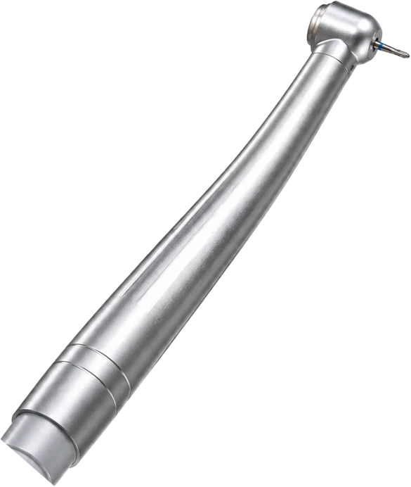
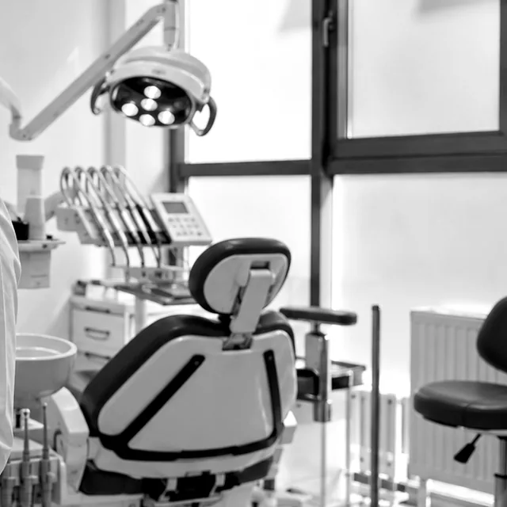
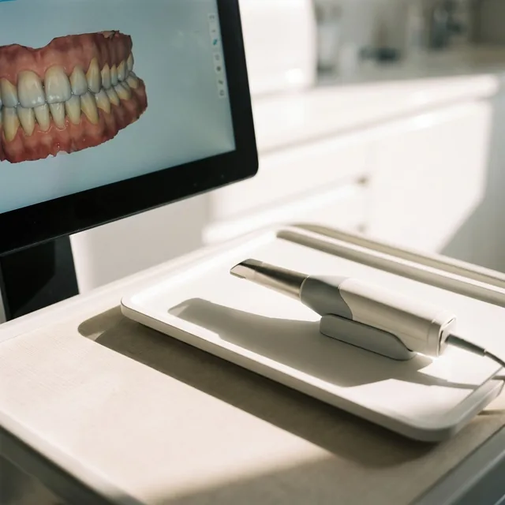
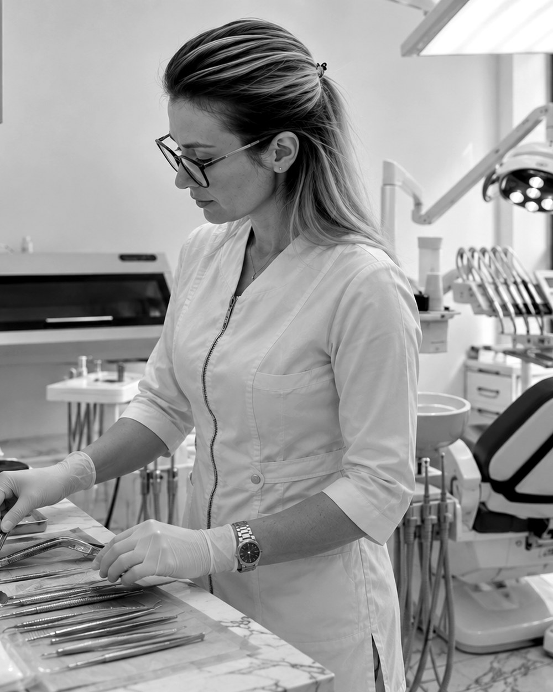
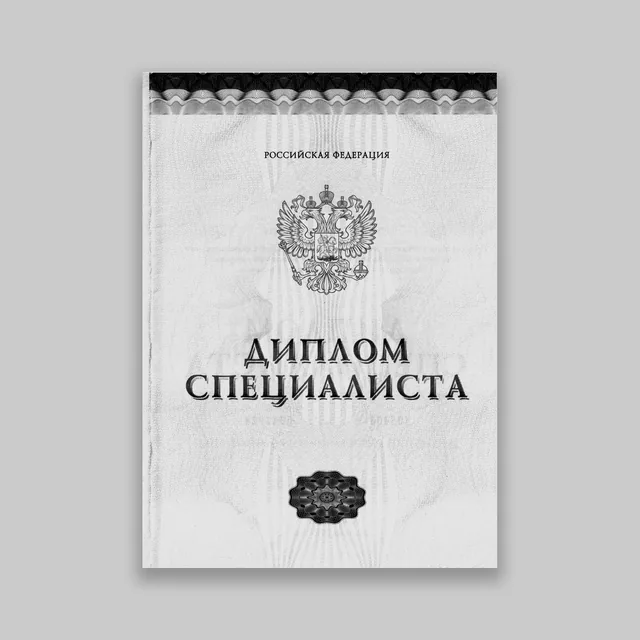
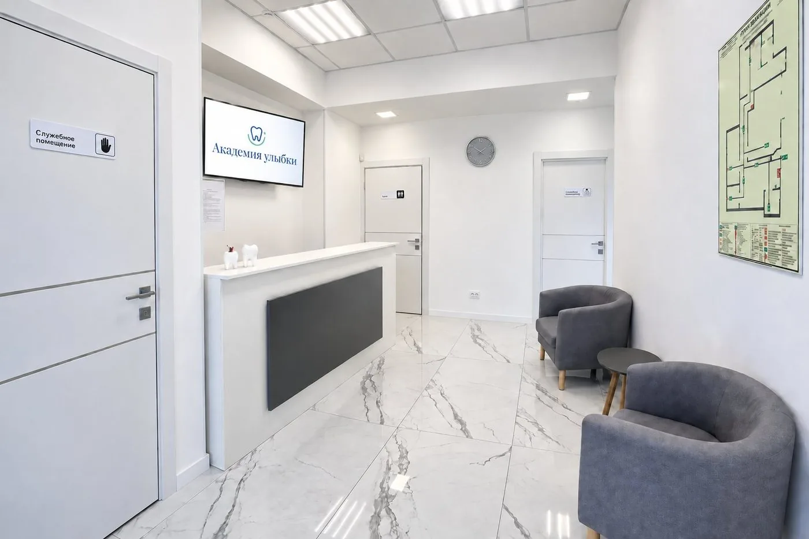
Экскурсия
Изучите клинику до того, как придёте
Два изолированных кабинета, в каждом своя установка. Стерилизационная зона с автоклавом: инструменты раскрывают при пациенте, одноразовое уходит в утилизацию после каждого приёма. Цифровой сканер вместо слепочной массы. Чистота и удобство складываются из мелочей, которые на приёме обычно не показывают.
Всё это можно рассмотреть своими глазами — онлайн и без записи. Экскурсия интерактивная, а по дороге спрятана игра: победите кариес и заберите подарочный сертификат в клинику. номинал сертификата утверждает клиника
Материалы
Реставрация, которая служит десять лет и дольше
Современные композиты держатся десять лет и дольше — но только если аккуратно пройдены все этапы: подготовка эмали, промывание, послойная укладка, полимеризация калиброванной лампой и полировка края. Небрежность на любом из них — и пломба окажется недолговечной.
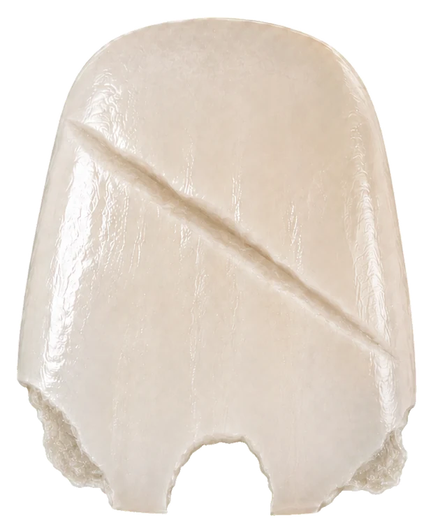
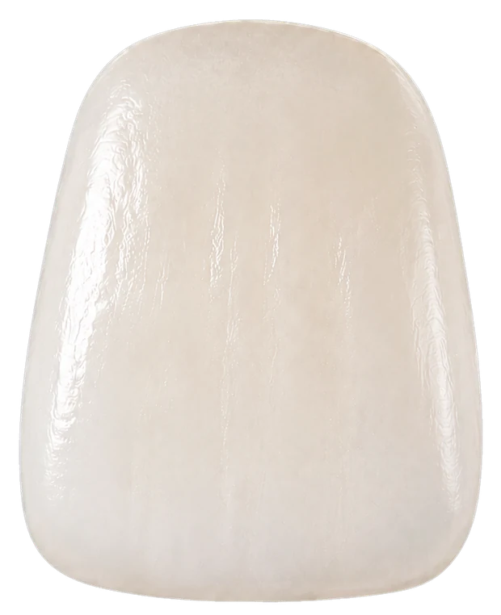
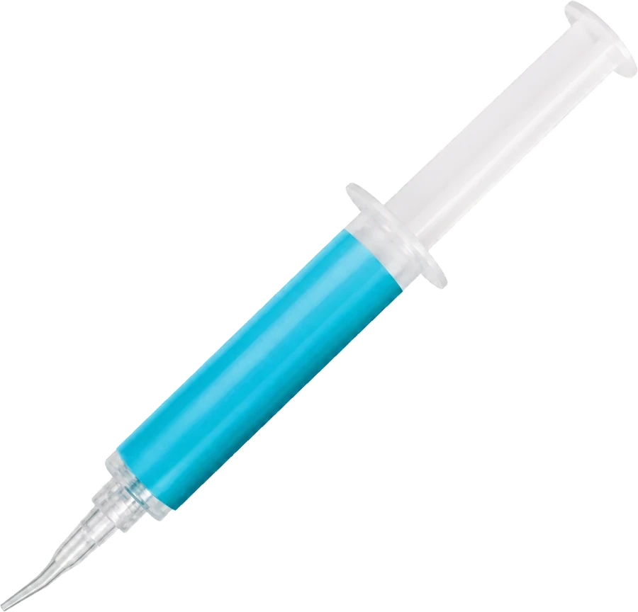
1Подготовка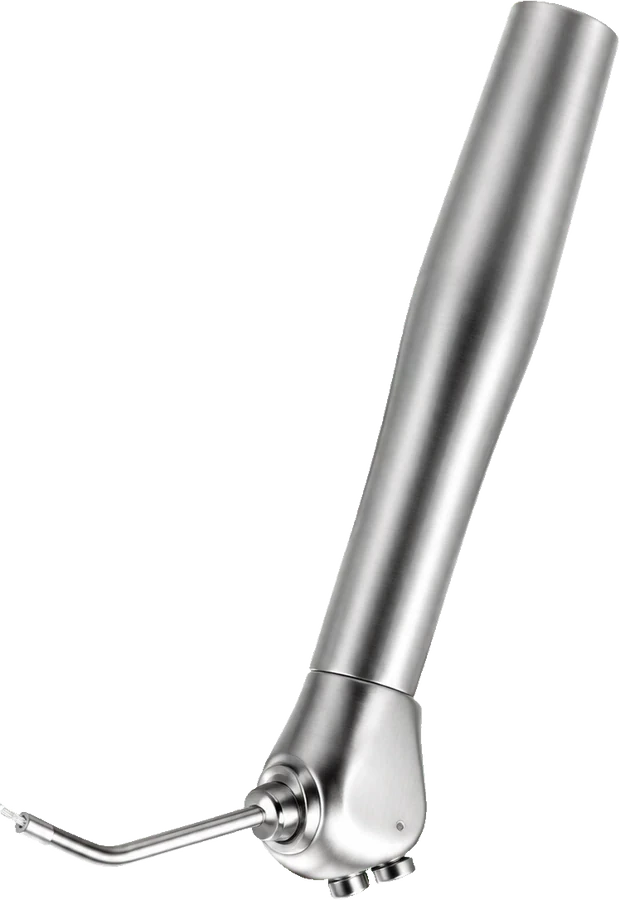
2Промывание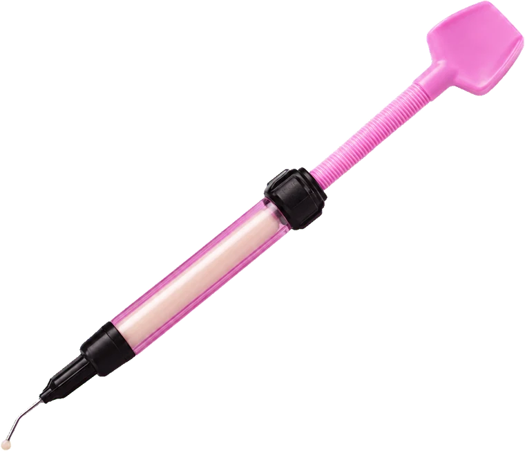
3Композит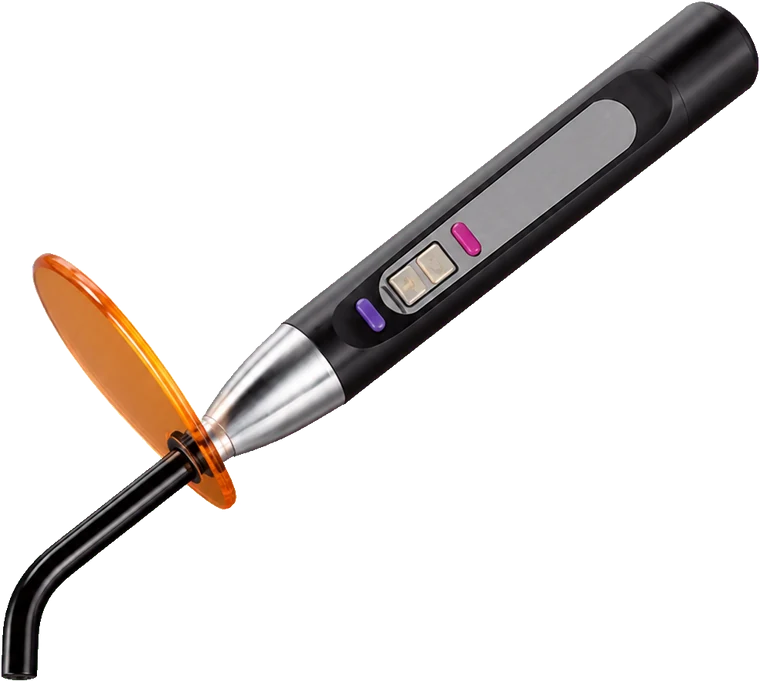
4Свет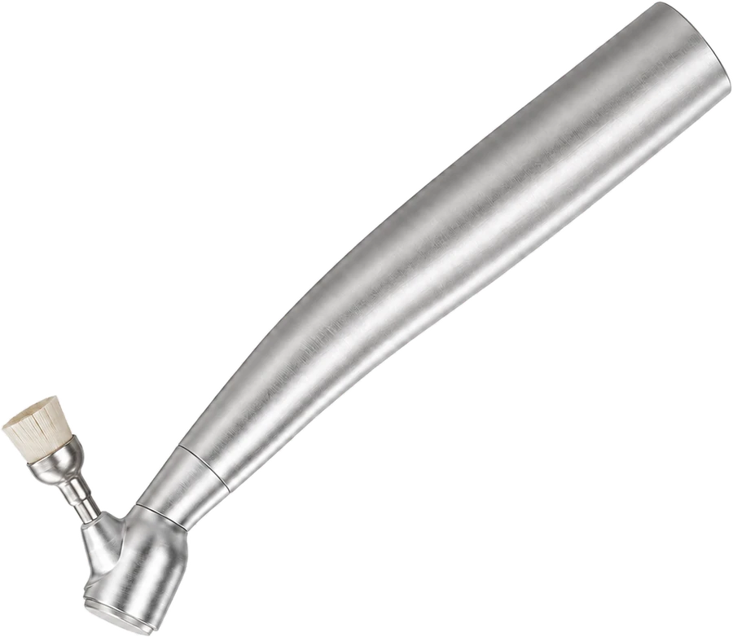
5ПолировкаГотово
ПЛОМБА‑10
Промокод на скидку 10 % на лечение кариеса для новых пациентов. Назовите его администратору или отправьте в сообщении. черновик условий
Получить скидку в WhatsApp- Подготовка эмалиГель протравливает поверхность, чтобы композит сцепился с тканью зуба.
- Промывание и сушкаГель смывается водой, поверхность высушивается воздухом.
- Послойная укладка композитаМатериал вносится тонкими слоями — так он меньше даёт усадку.
- Полимеризация светомКаждый слой засвечивается калиброванной лампой.
- Шлифовка и полировкаКрай пломбы выводится вровень с эмалью и полируется.
Кто ведёт приём
Белоусова Александра Сергеевна
Стоматолог-терапевт, хирург, имплантолог. В практике с 2015 года. Основатель клиники и её главный врач: диагностику, лечение, удаление, имплантацию и протезирование пациент проходит у одного специалиста.
- Образование
- Новосибирский государственный медицинский университет, «Стоматология», 2015
- Стаж
- 11 лет
- Специализации
- Терапия, эндодонтия, пародонтология, хирургия, имплантация, ортопедия
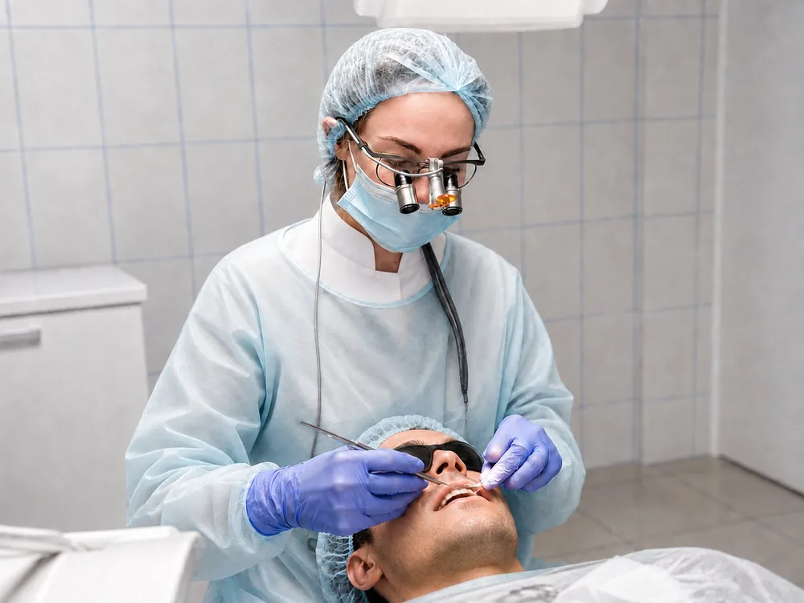
Отзывы
Что пишут пациенты
Хожу к этому специалисту уже 10 лет. Раньше боялся стоматологов как огня, теперь хожу спокойно. Врач всегда всё объяснит простыми словами, ничего не навязывает. Если можно обойтись без сложного лечения — говорит честно.
Пришла к Александре по рекомендации. Очень внимательный и грамотный хирург-стоматолог-имплантолог. В самой клинике всё новое, чистое и современное.
Чувствуется огромный опыт, уверенность и искреннее желание помочь человеку, а не просто поставить галочку. После визита — уверенность, что здоровье в надёжных руках.
Высокий уровень профессионализма, всё быстро и качественно, рекомендую.
Стерильность
Набор инструментов — на одного пациента
Каждый набор проходит стерилизацию в автоклаве и хранится в упаковке до вашего приёма. Одноразовое — слюноотсосы, салфетки, перчатки, стаканы — утилизируется после каждого пациента.
Соберите набор — начнётся многоступенчатая стерилизация.
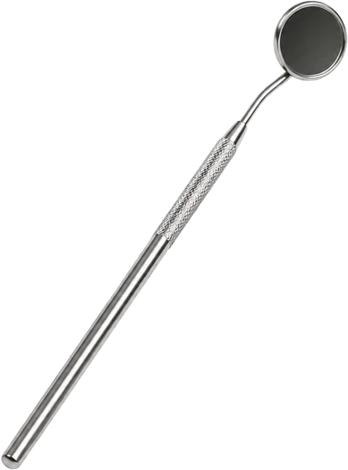
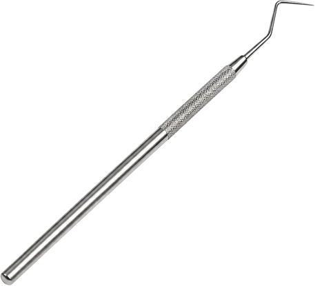
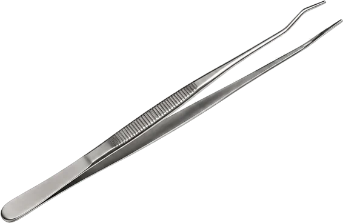
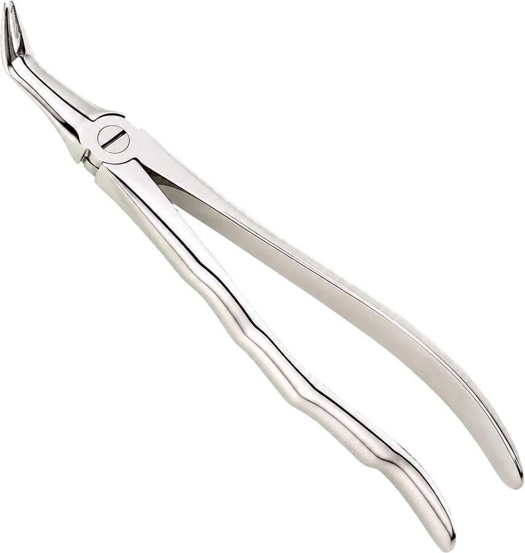
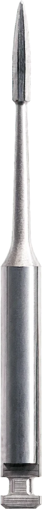
- Одноразовое — в отходыСлюноотсосы, салфетки, перчатки и стаканы меняются после каждого пациента.
- Многоразовое — в автоклавЗеркало, зонд, пинцет, щипцы и боры проходят стерилизацию паром под давлением.
- Индивидуальная упаковкаНабор запаивается и хранится закрытым до приёма.
- Вскрытие при пациентеУпаковка открывается в кабинете, у вас на глазах.
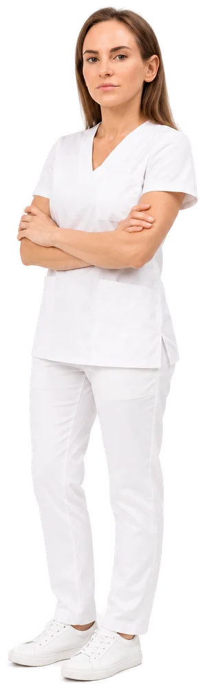
Вопросы и ответы
О чём чаще всего спрашивают
Как проходит первый визит?
Первичный приём длится около часа. Мы разговариваем о том, что беспокоит и чего вы ждёте, осматриваем полость рта, делаем фотопротокол и, если нужно, даём направление на снимок. В конце вы получаете письменный план лечения с этапами и стоимостью. Никаких процедур «заодно» в первый визит не делается — только по вашему решению.
Почему консультация платная?
Потому что это час работы врача, а не десять минут осмотра «на бегу». За это время вы получаете документ — план и смету, — с которым можно пойти и в другую клинику. Если вы начинаете лечение у нас в течение 30 дней, стоимость консультации вычитается из его цены.
Можно ли прийти с острой болью без записи?
Позвоните — если в расписании есть окно, примем в тот же день. Острая боль всегда в приоритете: сначала снимаем её, потом планируем остальное.
Как часто нужна профессиональная чистка?
Мы рекомендуем раз в три месяца: за этот срок налёт не успевает превратиться в камень, а врач вовремя замечает кариес и воспаление дёсен в самом начале. При заболеваниях дёсен, брекетах и имплантатах интервал тем более короткий. Точный срок врач назначает после осмотра.
Больно ли лечить зубы?
Лечение проходит под местной анестезией. Современные анестетики действуют через несколько минут и полностью убирают чувствительность на время процедуры. Если вы боитесь самого укола, скажите — место инъекции предварительно обезболивается гелем.
Можно ли лечить зубы во время беременности?
Можно и нужно: очаг инфекции во рту хуже для беременности, чем лечение. Оптимальное время — второй триместр. Используются анестетики без адреналина или с минимальной дозой, снимки — только при необходимости и с защитой. Сообщите врачу о сроке.
Обязательно ли удалять зубы мудрости?
Нет. Удаляют те, что растут неправильно, упираются в соседний зуб, регулярно воспаляются или не поддаются лечению. Здоровый, прорезавшийся и доступный для чистки зуб мудрости можно оставить.
Сколько служат коронки?
Цирконий и E‑max — в среднем 10–15 лет и дольше при хорошей гигиене. Главный враг коронки — кариес на границе с зубом, поэтому важны ёршики и регулярные осмотры.
Контакты
Виноградная, 55/1
- Адрес
- Сочи, ул. Виноградная, 55/1, пом. 22, 2‑й этаж
140 м от санатория «Радуга», есть парковка - Телефон
- +7 (989) 751‑28‑51
- Написать
- Приём
- По предварительной записи
- Оплата
- Наличные, карта, QR‑код. Рассрочка обсуждается на приёме
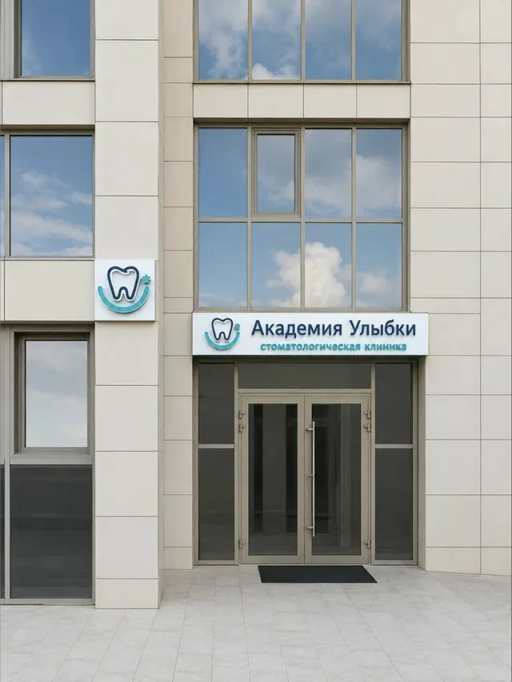
ул. Виноградная
55/1
Академия улыбки
вход с улицы · 2‑й этаж · парковка
140 м
53
Санаторий «Радуга»